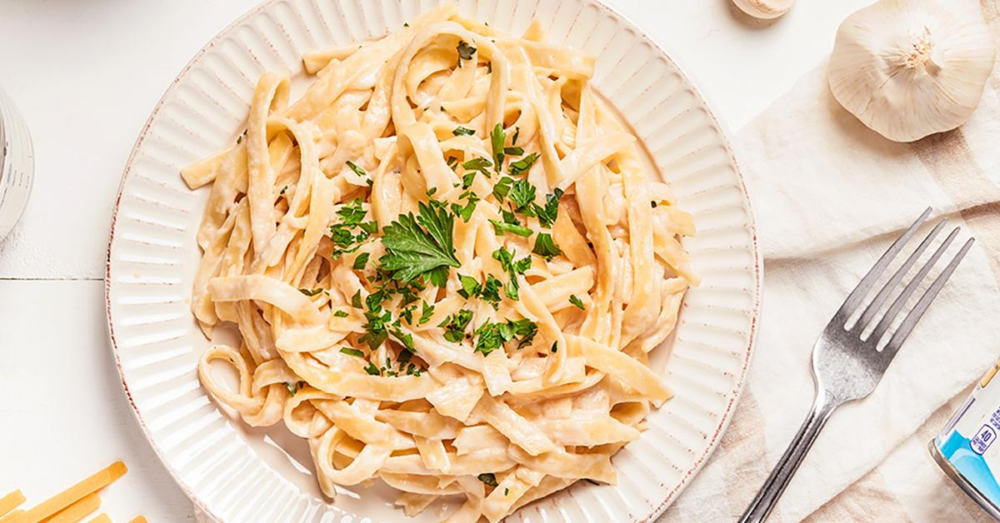
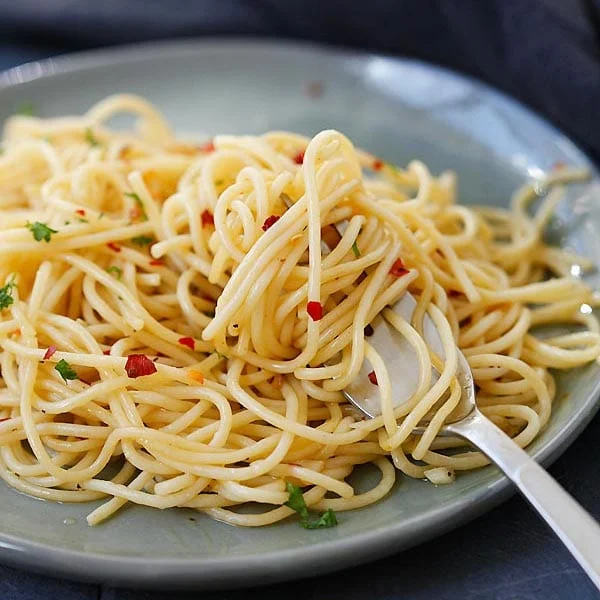
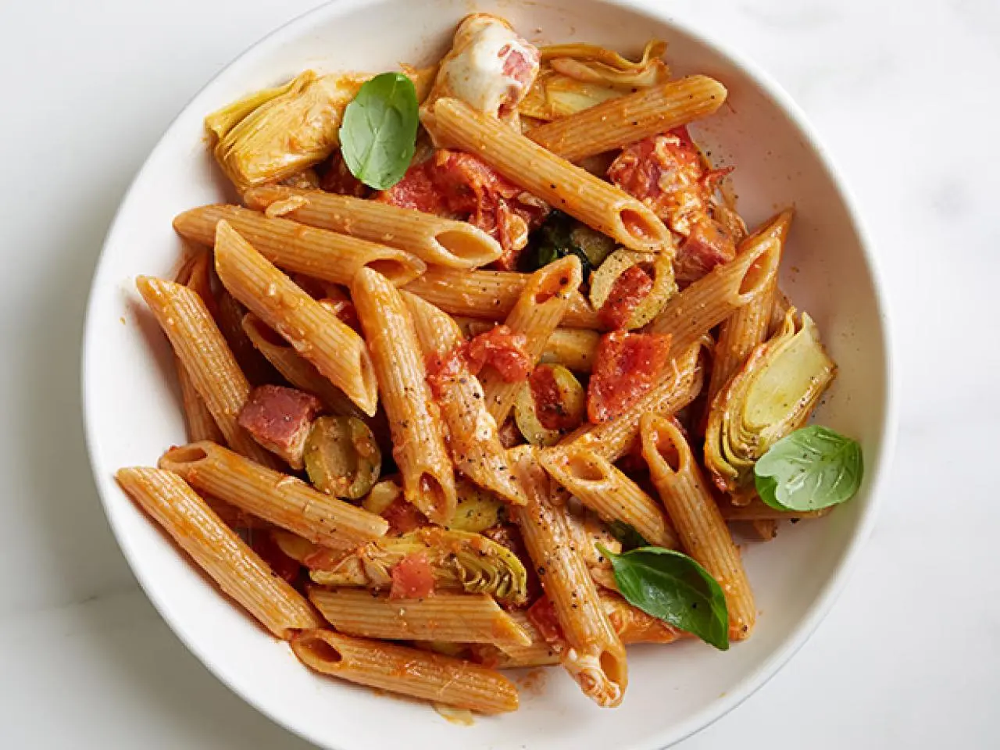
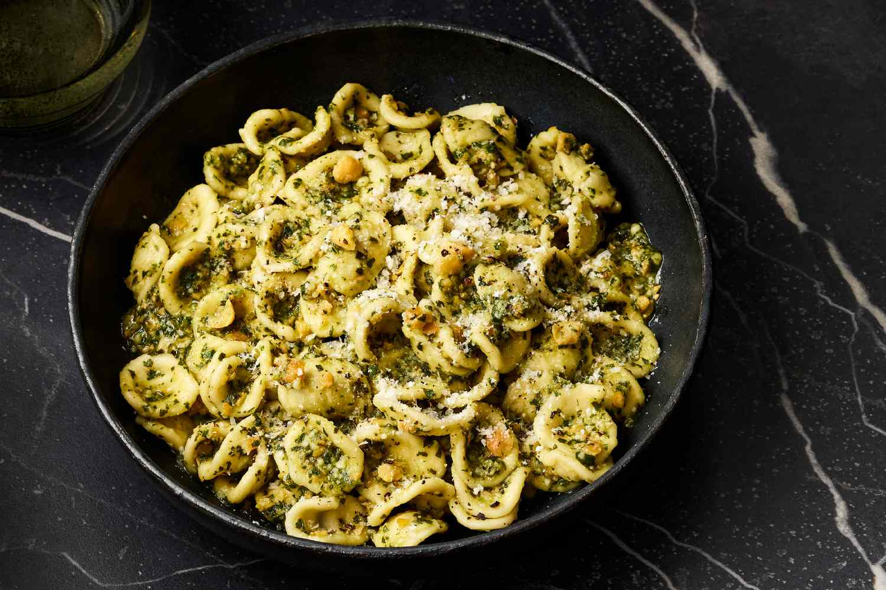

The 5 Pastas You Should Always Have in Your Pantry
Today I'm sharing my personal opinion on the five pastas that are
always in my pantry - and should be in yours, too.
By Lourens Adendorff |Published On September 18, 2025

1. Spaghetti

I highly recommend spaghetti, possibly the most recognizable pasta,
with tomato and basil sauce, carbonara, or seafood - as long as you do
not break it.
Once you've put your perfectly pristine, unbroken spaghetti into the
boiling water, adjust the salt based on the dish you're making.I
suggest keeping the water salt-free if you're pairing the spaghetti
with an already heavily-seasoned sauce like pesto, but adding some
salt when making a cheese or simple tomato sauce.
2. Penne Rigate

One of my favorite things about penne is its versatility: I favor it
with a four-cheese sauce with sausage or meat. I love the fact that
penne are hollow as that helps them collect and hold sauce very well.
3. Fusilli
Fusilli is for one thing and one thing only: You can only make fusilli
with pesto. Any other way is a waste of time. I would suggest using a
pesto that has a lot of pine nuts. The pine nuts fit perfectly between
the curls, and the greens of the pesto fill the gaps in the pasta.
4. Orecchiette

The shape of orecchiette, or "little ears" in Italian, is perfect for
holding chunky, creamy sauces. I highly recommend it with sausage and
chopped broccoli.
5. Rigatoni
Rigatoni is one of my favorite types of pasta because it uses the same
principle as penne, but they are wider so they're perfect for chunkier
dishes with things like diced pancetta and diced tomatoes.